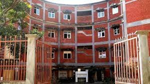

Hostels have a social component to them that allows you to meet new people and try new things. Usually hostels will arrange different social events like pub crawls, walking tours, happy hours, or hostel dinners. These serve as a great way to break the ice and get to know other people from around the worlk
| Day | SUNDAY | MONDAY | TUESDAY | WEDNESDAY | THRUSDAY | FRIDAY | saturday |
|---|---|---|---|---|---|---|---|
| breakfast | chole bhotre,tea | puri,sbji,tea | puri,curd | puri,chana | puri,sbji,tea | puri,dahi,tea | paw bhaji,tea ,fruit |
| lUNCH | rajma,sbji,chawal,raita | kadhi,sbji,salad | dal,sbji,chawal | chole,sbji,raita | dal,sbji | kala chana | |
| EVENING BREAKFAST | poha | samosa,tea | macroni,tea | patties | chowmin | samosa | namkeen |
| DINNER | chawal,dal,sbji | chawal,sbji | kheer,chawal,sbji | chawal,dal | egg,chawal | kheer,sbji | chiken,paneer |

Firstly let me clear you that student in school's hostel have such type of problem because in college the warden is for name sake only. Here are few reasons why hostel students annoyed with hostel warden :-
1.Homesickness :- The most prominent reason behind this is the students think about there home every time as a result the bond between students and warden become weak.
2.Feeling of Imprisonment :- Most of the students think that the hostel is like jail to them and warden is the jailor. They think that their freedom has been banned.
3. Punishment :- When students get caught by warden for any kind of mischief they have been given bearable punishment, due to this students also get annoyed.
4. Sometimes if warden is giving special attention to a particular student, makes other students annoyed.
It also depend upon the Warden's nature. But I can assure you that the dose a student get in hostel makes him rough and tough. In boarding schools these types of questions revolve in students mind only in his initial phases. After being adapted to the hostel, this question merely come in a hosteller's mind.